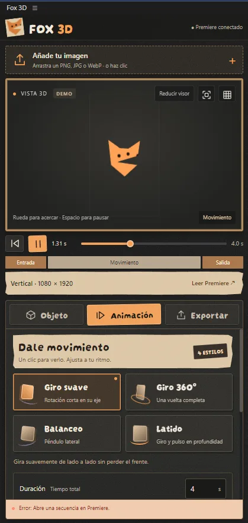

Agrega tu imagen
Arrastra un PNG, JPG o WebP. Si tiene transparencia, Fox sigue su silueta, incluidos los huecos.
PARA ADOBE PREMIERE PRO
Convierte tu imagen en un objeto con volumen, dale movimiento y llévalo a tu edición como vídeo con transparencia.
Panel para Windows · Sin After Effects · Exportación local

FOX 3D EN ACCIÓN
Explora los controles del panel desde esta página. Pasa el cursor o toca cada zona de la vista de arriba para descubrir cómo una imagen se convierte en movimiento.
Volver al panelUN FLUJO SENCILLO
Arrastra un PNG, JPG o WebP. Si tiene transparencia, Fox sigue su silueta, incluidos los huecos.
Ajusta profundidad y tamaño. Elige giro suave, giro 360°, balanceo o latido y revisa el resultado en el visor 3D.
Genera un MOV ProRes 4444 con alfa. Impórtalo al proyecto o colócalo en una pista libre de Premiere.
HECHO PARA EDITAR
Fox puede leer la resolución y los FPS de la secuencia activa. Puedes controlar la entrada, la salida y el brillo del objeto antes de exportar.
Revisa el giro, pausa y avanza por la animación antes de generar el archivo.
El mismo motor del visor produce los fotogramas del MOV con transparencia.
Importa el resultado al proyecto o deja que Fox busque una pista disponible.
ANTES DE EMPEZAR
Windows 10 u 11, Premiere Pro 24 o posterior con soporte CEP y WebGL. La exportación usa FFmpeg, que se configura por separado desde el panel. Fox 3D no requiere After Effects.
FOX 3D · MOTION STUDIO
Prepara objetos con volumen y llévalos a tus vídeos con fondo transparente.
USD $20 pago único
Licencia de uso en hasta 2 computadoras simultáneamente. Sin suscripción.
El enlace de compra se añadirá cuando esté lista la venta.